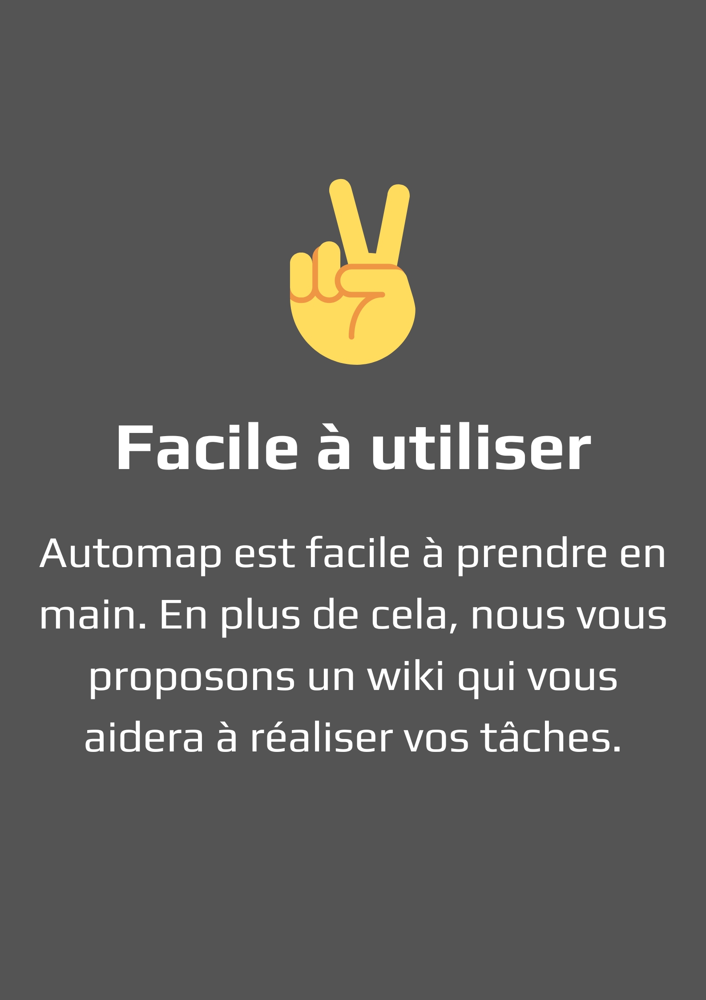
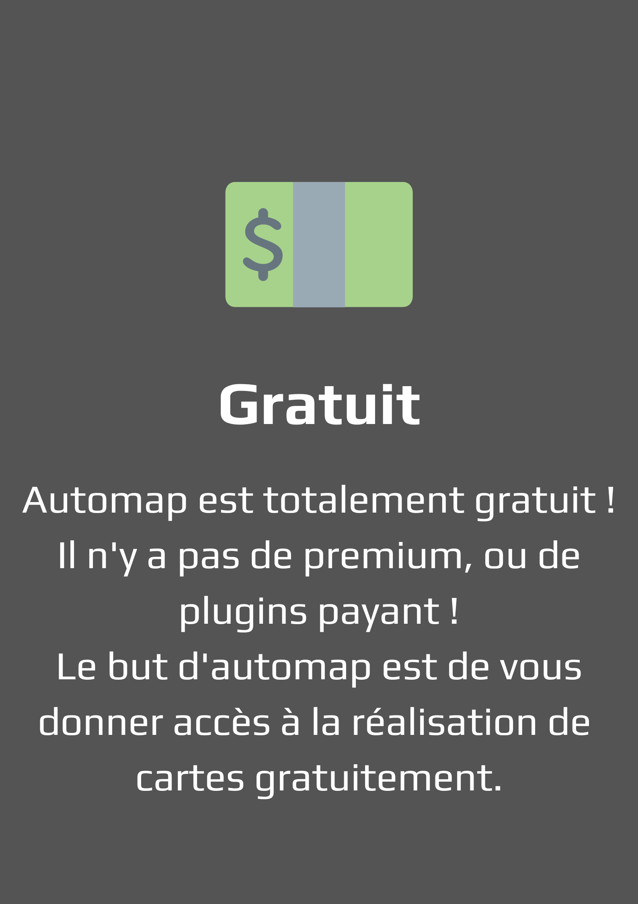
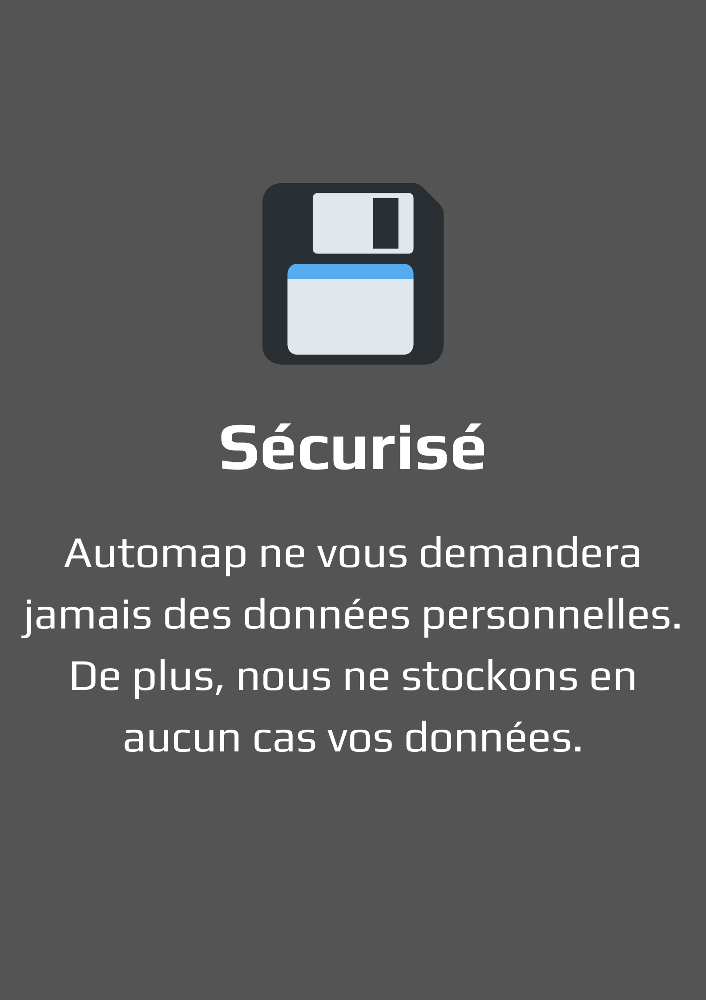
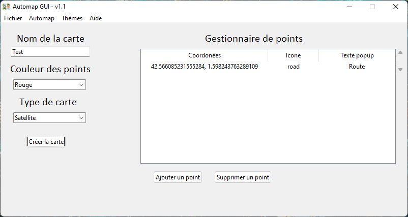
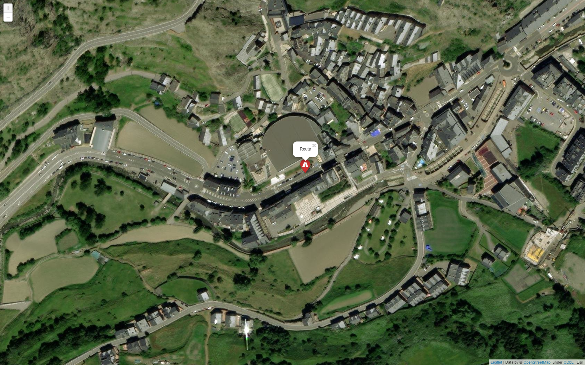

Presentation du logiciel
Automap est un logiciel libre et gratuit qui permet de générer des cartes Open Street Map avec une vue satellite gratuitement, à l'aide
d'un terminal simple d'utilisation. Le logiciel fonctionne avec le module folium, sous Python 3.10. Pour ceux qui ont du mal, vous
pouvez retrouver le wiki sur le dépôt github, ou en cliquant ici.
Exemple de carte
Fonctionnalités
  
Captures d'écrans
 Automap - Projet réalisé par Luckyluka17.
Propulsé par